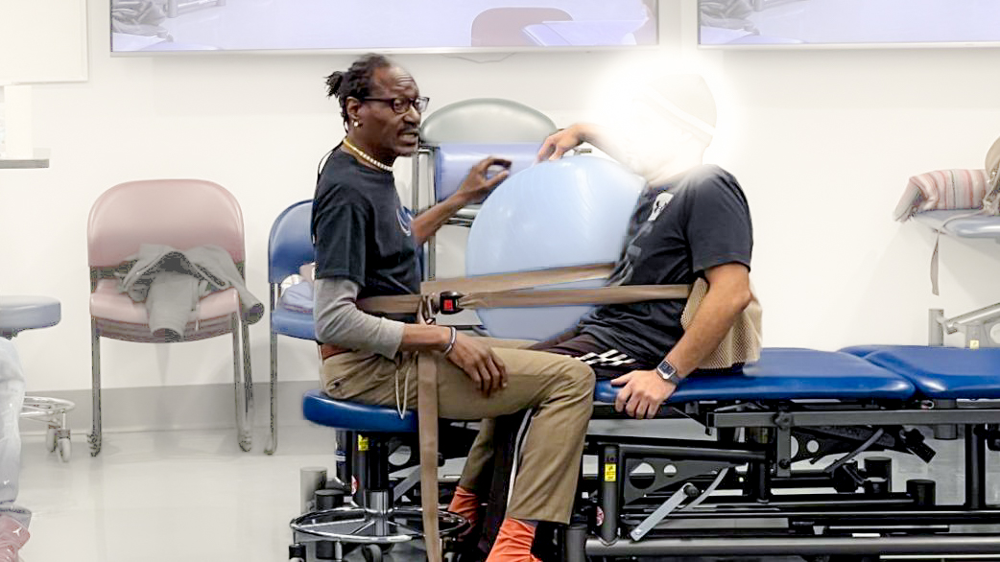
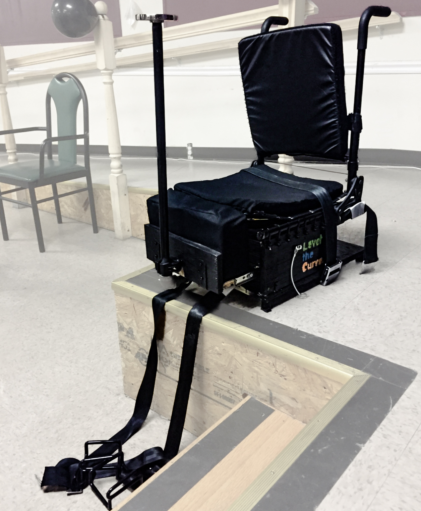
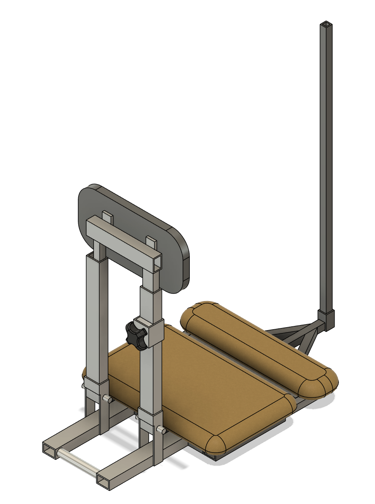
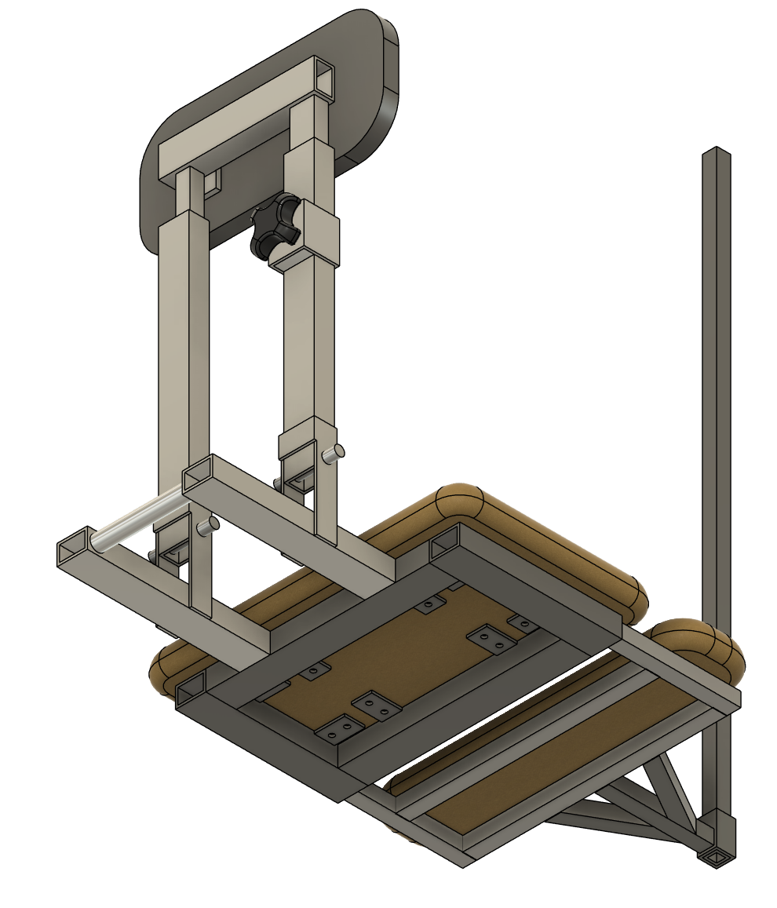
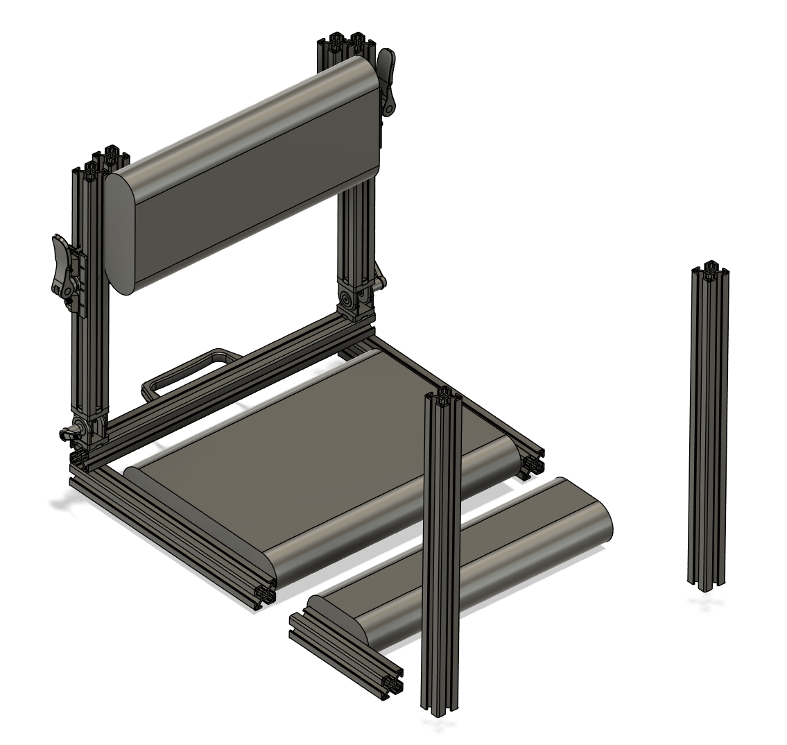
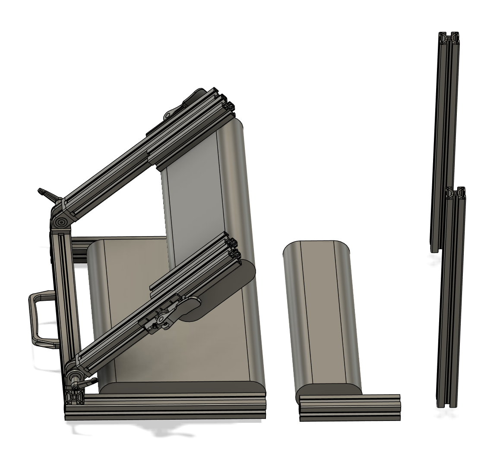
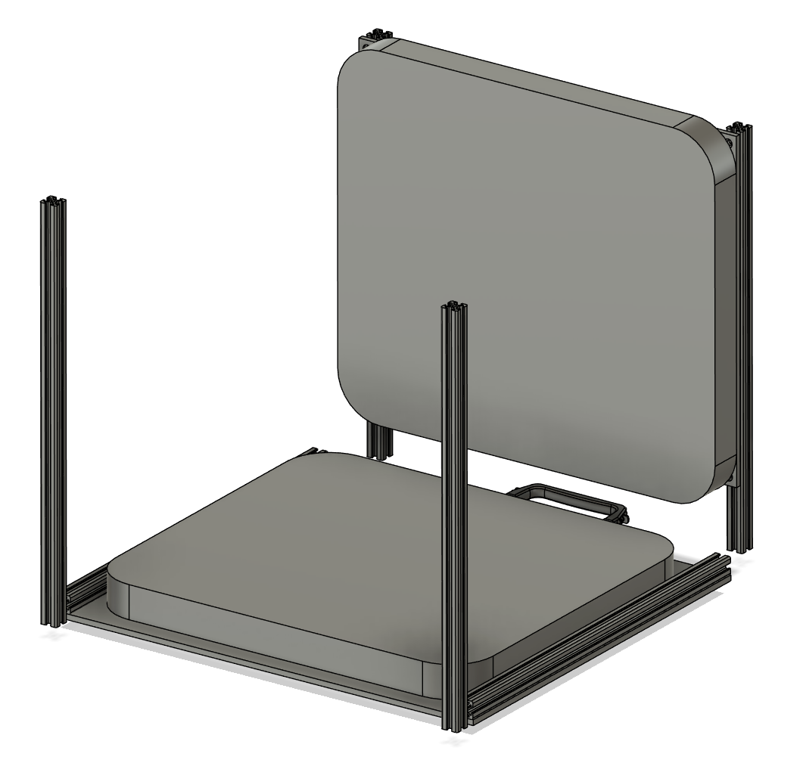
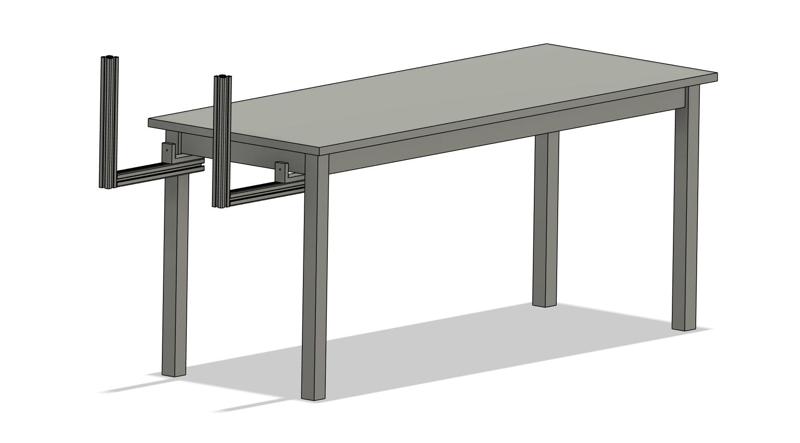

Spinal Mobility Equipment - PROJECT IN PROGRESS
Project Information
Company: Level The Curve
Task
Create an equipment that will allow a physical therapy patient to sit upright during spinal mobility exercises.
Deliverables
CAD model, equipment design, and final product.
The Project
To create an equipment that will replace the physical therapist (left) as a static object to wrap a belt around and keep the patient sitting upright during spinal mobility exercises. This is to reduce the physical strain on the physical therapist's body.

Initial Design
The initial design was a chair with a pole that the patient would sit on, which was large, heavy, and unstable.

Meeting with the Physical Therapist
In order to understand the requirements of this equipment, I met with Lawrence Harding, our client who is a physical therapist.
Lawrence invited me to watch his physical therapy session, so that I can better envision how the equipment will be used.
The following points were noted:
• Must be a portable size and weight
• The bottom of the chair should not cause a drastic height difference to the therapy bed that would cut off blood flow in the patient's legs
• Max pole height required is at T7 vertebra of the spine
• A back rest is not necessary, as the belt should support the patient
• Pole must be rigid
• Pole should have a way to hold the belt higher than the patient's core to ensure max stability
• The chair should be secured to ensure it does not tip back
• There needs to be some distance between the patient's body and pole to allow the patient to sit up properly
• Rotatable pole would be useful for correcting a patient's spine if it is bent
• ~$300 max
Changing the Design
The original CAD is shown.


A new design was drafted using the original CAD as a base. The poles and other straight bars in the design will be t-slot framing as it has many modular accessories that are compatible with it. The number of poles has been updated to two, to better reflect the contact points of the belt on the physical therapist, and to disperse the weight of the patient.


After considering the requirements, the model was updated to a simpler design.

After further thinking to simplify the design, it became evident that none of the requirements suggested a chair form. Therefore, the design was reduced to two poles, which will be clamped onto the therapy bed.

The design is still in progress, and features to be added include the rotating mechanism of the pole, and loops on the poles to hold the belt in place.
Ongoing Project
The design will be finalized and then a prototype will be built next. Please look out for updates!